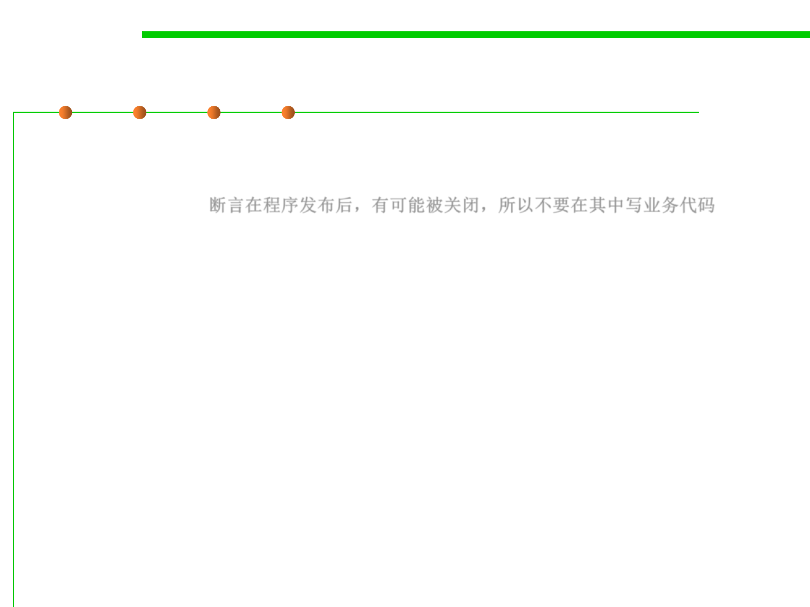

7.3 Assertions and Defensive Programming
Avoid putting executable code in assertions
▪ Since assertions may be disabled, the correctness of your program
should never depend on whether or not the assertion expressions
are executed. 断言在程序发布后，有可能被关闭，所以不要在其中写业务代码
▪ In particular, asserted expressions should not have side-effects .
– For example, if you want to assert that an element removed from a list was
actually found in the list, don’t write it like this:
▪ If assertions are disabled, the entire expression is skipped, and x is
never removed from the list. Write it like this instead:
// don't do this:
assert list.remove(x);
// do this:
boolean found = list.remove(x);
assert found;